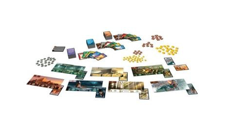

Top 10 de los mejores juegos de mesa
-
Aventureros al tren
2 de octubre, 1900 – 28 años después de que ese excéntrico londinense, Phileas Fogg, aceptase un reto que le haría ganar 20.000 libras: dar La vuelta al mundo en 80 días. Ahora, en el amanecer de un nuevo siglo, es el momento de emprender un viaje aún más imposible. Unos viejos amigos se han reunido para celebrar la impetuosa y lucrativa apuesta de Fogg, y proponer una nueva. El premio: 1 millón de dólares para el ganador. La apuesta: comprobar quién es capaz de visitar en tren más ciudades norteamericanas, en tan sólo 7 días.
-
Pandemic
Cuatro enfermedades han brotado en el mundo y depende de un equipo de especialistas en varios campos encontrar la cura antes de que sea demasiado tarde para la humanidad.
-
7 wonders
Finalista 2011 del Juego del Año es dinámico, ameno y atractivo. Presenta preciosas ilustraciones en los tableros y cartas. Juego sin mucha dificultad en el que hay que crear una civilización a lo largo de las Eras I, II y III. El objetivo es conseguir más puntos de victoria al final de la partida, y para ello cada jugador recibe cartas con la que puede mejorar su maravilla, construir edificios o conseguir monedas. Ser una potencia militar es imprescindible para ser el vencedor.
 -
Azul Vitrales de Sintra
Después de decorar el Palacio de Évora, el rey Manuel I de Portugal quiere encargar a los más grandes artesanos de vidrieras del mundo que adornen las ventanas del Palacio Real de Sintra. Como artesano del vidrio es una ocasión única en la vida para demostrar tus exquisitas habilidades al servicio del rey y del país. ¿Serás el mejor en la creación de los vitrales más hermosos de todo Portugal?
-
Zombicide
La ciudad está infestada de zombis y tendrás que armarte y trabajar en equipo para sobrevivir a esta batalla campal. Por desgracia para ti y tus compañeros supervivientes, la cantidad de zombis es mucho mayor que la de vuestras balas.
-
Munchkin
Baja al Dungeon. Mata todo lo que encuentres. Apuñala a tus amigos y quédate con sus cosas. Toma el tesoro y corre. Admítelo. Te encanta.
-
Dixit
Juego del Año en España en el 2009. 84 cartas con bellas ilustraciones para que los pequeños sorprendan con su imaginación y los adultos se luzcan con su agudeza. El tablero maca la puntuación con las fichas con forma de conejo. Una ficha por jugador de distinto color. Cada turno un cuentacuentos diferente que elegirá una de sus cartas y dirá una frase que la identifique. El resto de los jugadores seleccionará de las suyas la que más se asemeje a la frase del turno. Se descubren todas las cartas y… ¿cuál es la del cuentacuentos?
-
Twilight Struggle
El gran juego de la guerra fría. Unión Soviética y Estados unidos en una guerra de espías, política ... y traición.
-
Código secreto
Divertido y entretenido juego de espías, claves secretas, códigos desconocidos..., todo un mundo nuevo de intrigas y misterios que tendrás que adivinar y sortear para ganar la partida.
-
Time´s Up
Time's Up Party es la nueva versión del famoso Time's Up Amarillo. Se trata del primer título de la colección Party, lo cual supone una actualización completa de la línea Celebrity, es decir, los que anteriormente se conocían como Time's Up amarillo, azul y morado. Trata de describir o acertar el mayor número de personajes famosos, películas, cantantes..., en 30 segundos.
| Colaborativo | Competitivo | Por equipos |
|---|---|---|
| Pandemic | Aventureros al tren | Time´s up |
| Zombicide | 7 wonders | Código secreto |
| Azul | ||
| Munchkin | ||
| Dixit | ||
| Twilight Struggle |